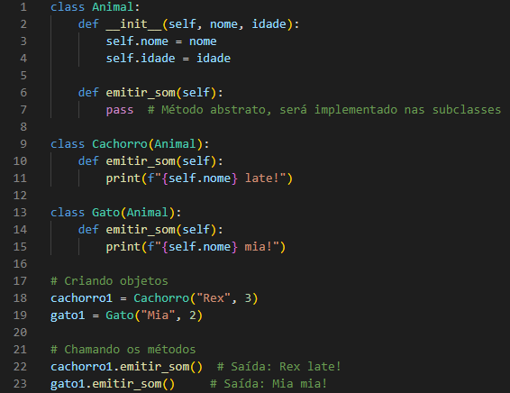
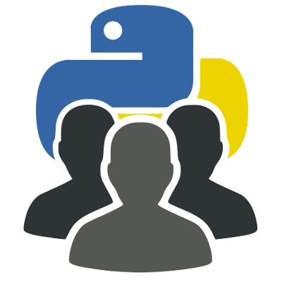
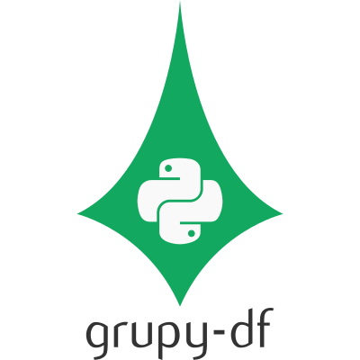
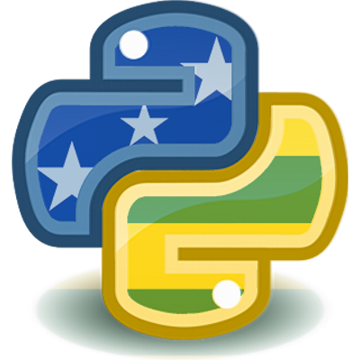
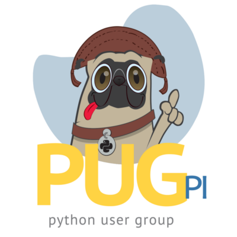
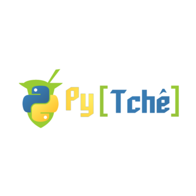
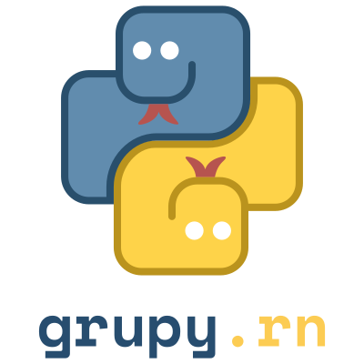
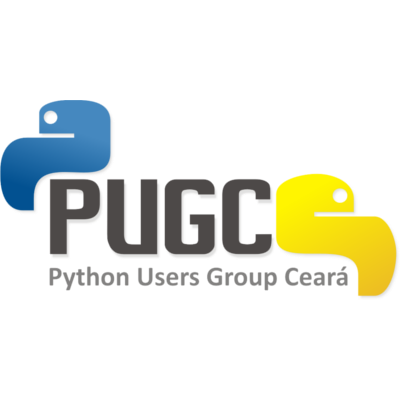
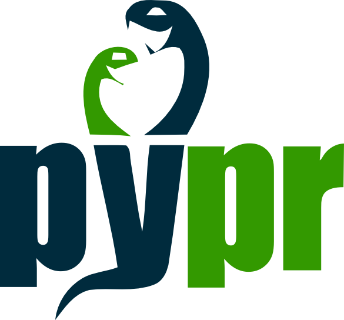
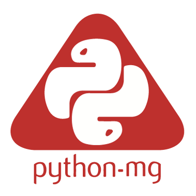

Concepção de OO
A Orientação a Objetos (OO) é um paradigma de programação que se baseia na ideia de que tudo no mundo é composto de objetos que possuem atributos e comportamentos. Na programação orientada a objetos, o objetivo é modelar o mundo real por meio de objetos que interagem entre si, formando sistemas complexos.[1]
Objetos
Usamos o termo objeto para representar um determinado elemento do mundo real. Mas somente analisaremos os objetos que tem relevância para a solução de um determinado problema. Portanto, o objeto é uma entidade do mundo real que merece representação para o ambiente estudado.
Classes
Uma classe representa um conjunto de objetos que possuem características e comportamentos comuns e de agora em diante, diremos que um objeto é uma instância de uma determinada classe, ou seja, criaremos nossos objetos baseados nas características definidas nas classes.
Atributos
Os objetos do mundo real possuem propriedades que possuem valores. Estes valores definem o estado do objeto. As propriedades recebem o nome de atributos em OO.
Métodos
Os métodos são procedimentos ou funções que realizam as ações próprias do objeto. Assim, os métodos são as ações que o objeto pode realizar. Tudo que o objeto faz é realizado através de seus métodos, pois é através dos seus métodos que um objeto se manifesta, e através deles que o objeto interage com os outros objetos.

Os 4 Princípios Fundamentais
Abstração
É a capacidade de representar conceitos complexos de forma simplificada. Isso significa que a programação orientada a objetos permite criar modelos simples e abstratos de objetos do mundo real, sem se preocupar com os detalhes internos desses objetos.
Encapsulamento
É o processo de ocultar os detalhes de implementação de um objeto e expor apenas uma interface pública. Isso permite que os objetos sejam usados sem a necessidade de conhecer todos os detalhes de sua implementação interna, melhorando a segurança e a simplicidade do código.
Herança
É o mecanismo que permite a criação de novas classes a partir de classes existentes. A classe original é chamada de classe pai ou superclasse, enquanto a nova classe é chamada de classe filha ou subclasse. A herança permite que as subclasses herdem atributos e métodos de suas superclasses, reduzindo a duplicação de código e facilitando a manutenção.
Polimorfismo
É o mecanismo que permite a criação de novas classes a partir de classes existentes. A classe original é chamada de classe pai ou superclasse, enquanto a nova classe é chamada de classe filha ou subclasse. A herança permite que as subclasses herdem atributos e métodos de suas superclasses, reduzindo a duplicação de código e facilitando a manutenção.
S.O.L.I.D
S — Single Responsiblity Principle (Princípio da responsabilidade única)
O — Open-Closed Principle (Princípio Aberto-Fechado)
L — Liskov Substitution Principle (Princípio da substituição de Liskov)
I — Interface Segregation Principle (Princípio da Segregação da Interface)
D — Dependency Inversion Principle (Princípio da inversão da dependência)
Esses princípios ajudam o programador a escrever códigos mais limpos, separando responsabilidades, diminuindo acoplamentos, facilitando na refatoração e estimulando o reaproveitamento do código.[2]
História da Linguagem Python
Python foi concebido no final de 1989 por Guido Van Rossum[3] no Instituto de
Pesquisa Nacional para Matemática e Ciência Da Computação, nos Países Baixos, como um sucessor do ABC, que era mais produtivo do que o C, porém com um custo de desempenho em tempo de execução. Mas ela não possuía funcionalidades para interação com sistemas operacionais que era uma necessidade do grupo na época.[4]
Python foi feita com base na linguagem ABC, possui parte da sintaxe derivada do C, compreensão de listas, funções anônimas e função map de Haskell, tratamentos de exceção e módulos da Modula-3, expressões regulares de Perl.
Evolução do Python
1991 É lançada a primeira versão de Python (0.9.0).
1994 É lançada a versão 1.0 e criado o principal fórum de discussão do Python (comp.lang.python) que ajudou no crescimento da base de usuários da linguagem. (Uma das primeiras comunidades de programação na internet).
1995 Guido continua seu trabalho no CNRI (Corporação para Iniciativas Nacionais de Pesquisa) onde lançou diversas versões.
2000 Os desenvolvedores se mudam para BeOpen afim de formar o grupo PythonLabs e lançada a versão 2.0, primeira e única na BeOpen.
2002 Versão 2.2 com a unificação dos tipos Python (escritos em C) e classes (escritas em Python) em somente uma hierarquia.
2008 Foi lançada a versão 2.6 já visando a transição para a versão 3.0 da linguagem. Entre outras modificações, foram incluídas bibliotecas para multiprocessamento, JSON e E/S, além de uma nova forma de formatação de cadeias caracteres.
Atualmente, Python é um dos componentes padrão de vários sistemas operacionais, entre eles estão a maioria das distribuições do Linux, AmigaOS 4, FreeBSD, NetBSD, OpenBSD e OS X. A linguagem se tornou a padrão no curso de ciências da computação do MIT em 2009
Comunidade
A principal comunidade de Python no país é a Python Brasil que se reúne anualmente e é mantida por voluntários da Associação Python Brasil (APyB)[5]
e a Python Software Foundation (PSF).









Curiosidades
⭕O nome Python é uma homenagem ao seriado de humor britânico Monty Python's Flying Circus.
⭕Existe um easter egg ao digitar "import this" e execultar será retornado um poema sobre a linguagem de programação? O poema foi escrito por Tim Peters, e se é intitulado The Zen of Python.
⭕O uso da cobra como símbolo foi popularizado pelo famoso livroProgramming Python da editora O'Reilly que estampava uma cobra píton na capa
Filosofia
A cultura de Python gira em torno de “The Zen of Python”, um poema com 20 princípios escrito pelo programador Tim Peters. Entre os princípios estão presentes:
⭕Bonito é melhor que feio
⭕Explícito é melhor que implícito
⭕Simples é melhor que complexo
⭕Complexo é melhor que compbcado
⭕Legibilidade faz a diferença
Sintaxe
A sintaxe da linguagem de programação Python é o conjunto de regras que define como um programa Python será escrito e interpretado (tanto pelo sistema de execução quanto por leitores humanos).[6]
Indentação
A indentação em Python é uma característica fundamental e única, substituindo as chaves presentes em muitas outras linguagens para definir blocos de código. A indentação determina a hierarquia do código, indicando quais linhas pertencem a um determinado bloco (como umloop, uma função ou um condicional).
Case-sensitive
Python é uma linguagem case-sensitive, o que significa que diferencia letras maiúsculas de minúsculas. Por exemplo, as variáveis idade e Idade são consideradas diferentes.
Tipos de Dados
Python possui diversos tipos de dados built-in para representar diferentes tipos de informações:
Inteiros(int): Números inteiros, como 42, -10.
Ponto flutuante(float): Números com casas decimais, como 3.14, -2.5.
Strings (str): Sequências de caracteres, como "Olá, mundo!".
Booleanos (bool): Valores lógicos, True ou False.
Listas: Coleções ordenadas e mutáveis de elementos, como [1, 2, 3,"banana"].
Tuplas: Coleções ordenadas e imutáveis de elementos, como (1, 2, 3).
Dicionários: Coleções não ordenadas de pares chave-valor, como {"nome": "Alice", "idade": 30}.